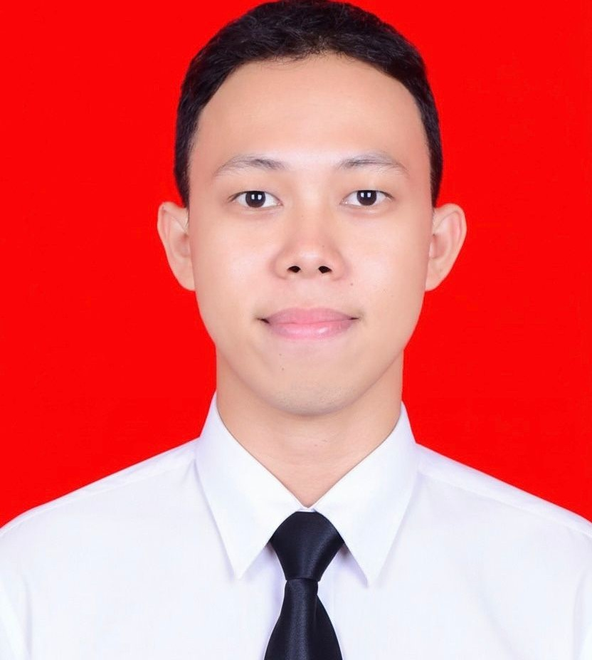

Mahasiswa PPG Calon Guru 2026
Perkenalkan, saya Fathul Rahman, S.Pd, mahasiswa PPG Calon Guru Universitas Negeri Malang Tahun 2026 Program Studi Informatika. Saya merupakan lulusan S1 Pendidikan Teknik Informatika dan Komputer Universitas Negeri Makassar (2024) yang memiliki minat dalam pengembangan media dan inovasi pembelajaran berbasis teknologi.
Selain itu, saya juga memiliki pengalaman dalam kegiatan administrasi dan akademik di lingkungan pendidikan yang memberikan saya pemahaman mengenai tata kelola sekolah, pelayanan akademik, serta dinamika interaksi di lingkungan pendidikan. Melalui pengalaman tersebut, saya belajar tentang pentingnya kedisiplinan, tanggung jawab, komunikasi, dan kemampuan bekerja sama dalam mendukung proses pendidikan yang efektif. Pengalaman tersebut menjadi salah satu bekal penting dalam membangun kemampuan profesional saya, khususnya dalam memahami kebutuhan peserta didik dan lingkungan sekolah secara lebih kontekstual. Dari proses itu, saya juga semakin termotivasi untuk terus mengembangkan diri agar dapat memberikan kontribusi yang positif dalam dunia pendidikan.
Saya berasal dari Ujung Jampea, Desa Bontobulaeng, Kecamatan Pasimasunggu Timur, Kabupaten Kepulauan Selayar, Sulawesi Selatan, sebuah wilayah kepulauan yang masih mempertahankan nilai-nilai sosial dan budaya masyarakat pesisir yang kuat. Lingkungan tempat saya tumbuh dikelilingi oleh keindahan alam, suasana pedesaan yang asri, serta kehidupan masyarakat yang menjunjung tinggi semangat gotong royong dan kebersamaan dalam kehidupan sehari-hari. Sebagian besar masyarakat di daerah ini menggantungkan kehidupan pada sektor pertanian, perikanan, dan usaha kecil masyarakat lokal yang menjadi sumber penghidupan utama.
Selain memiliki kekayaan alam yang indah, daerah saya juga menyimpan potensi kearifan lokal yang masih terus dilestarikan oleh masyarakat. Berbagai tradisi budaya, nilai kekeluargaan, serta sikap saling membantu antarwarga menjadi bagian penting dalam kehidupan sosial masyarakat. Lingkungan sosial dan budaya tersebut secara tidak langsung membentuk karakter saya menjadi pribadi yang disiplin, bertanggung jawab, mampu beradaptasi, serta memiliki kepedulian tinggi terhadap lingkungan dan sesama. Pengalaman tumbuh di lingkungan pedesaan yang sederhana namun penuh nilai kebersamaan juga mengajarkan saya untuk menghargai proses, kerja keras, dan pentingnya menjaga identitas budaya lokal di tengah perkembangan zaman.
Motivasi utama saya dalam menekuni profesi keguruan berasal dari sosok ibu saya. Sejak kecil, beliau selalu menanamkan pentingnya pendidikan dan berharap saya dapat menjadi pribadi yang bermanfaat bagi banyak orang melalui dunia pendidikan. Ibu saya sebenarnya memiliki cita-cita untuk menjadi seorang guru, namun keadaan pada masa itu membuat beliau tidak dapat melanjutkan pendidikan lebih tinggi. Beliau hanya menempuh pendidikan hingga bangku sekolah menengah pertama sebelum akhirnya menikah dan menjalani kehidupan sederhana bersama keluarga.
Meskipun demikian, semangat dan keinginan beliau untuk melihat anaknya berhasil dalam pendidikan tidak pernah pudar. Cita-cita yang belum sempat beliau wujudkan kemudian menjadi amanah dan motivasi besar bagi saya untuk melanjutkan perjuangan tersebut. Dukungan, doa, serta harapan beliau menjadi alasan kuat bagi saya untuk terus belajar, berkembang, dan berkomitmen menekuni profesi guru dengan penuh tanggung jawab. Bagi saya, menjadi seorang pendidik bukan hanya tentang mengajar, tetapi juga tentang melanjutkan harapan orang tua, memberikan manfaat bagi peserta didik, serta ikut berkontribusi dalam membangun generasi yang lebih baik melalui pendidikan.
Saya memiliki komitmen untuk menjadi seorang pendidik profesional yang mampu mengikuti perkembangan teknologi dan menerapkannya dalam proses pembelajaran yang inovatif, interaktif, dan menyenangkan. Saya ingin menciptakan suasana belajar yang dapat meningkatkan motivasi serta keterlibatan peserta didik dalam memahami materi pembelajaran.
Selain itu, saya juga ingin menanamkan nilai-nilai karakter seperti disiplin, tanggung jawab, kerja sama, dan sikap saling menghargai kepada peserta didik. Bagi saya, pendidikan tidak hanya berfokus pada aspek akademik, tetapi juga pada pembentukan karakter dan pengembangan potensi peserta didik agar menjadi pribadi yang mandiri dan berintegritas.
"Dreams will never work unless you have the courage to pursue them and the dedication to keep going."
- Inspired by life and perseverance -